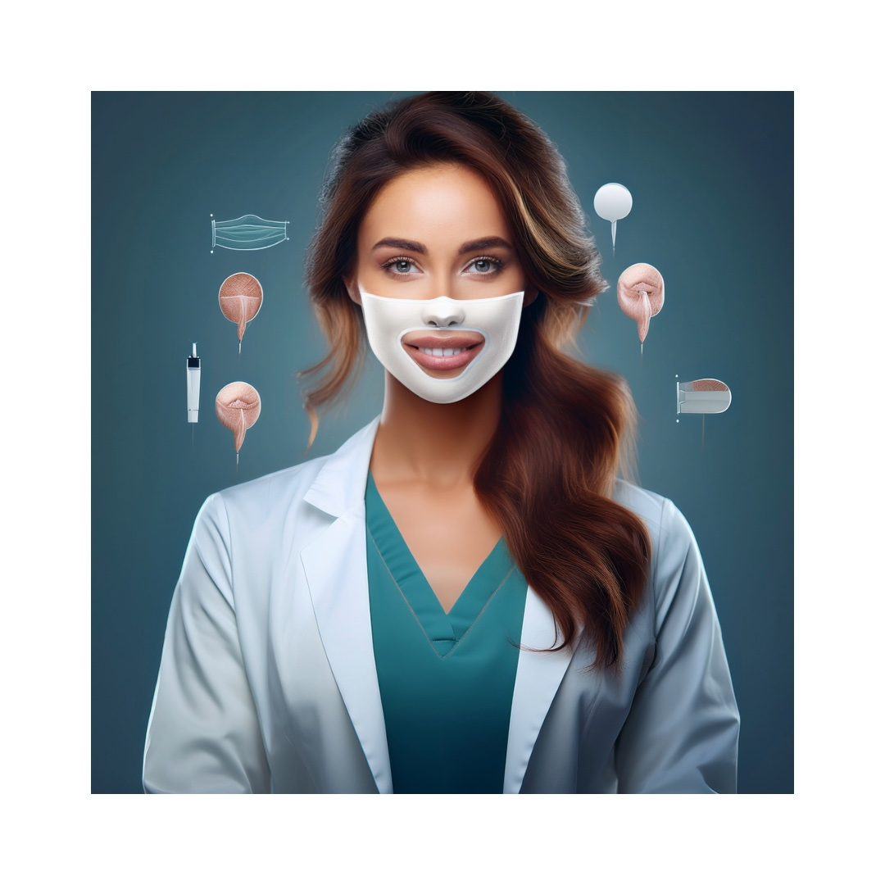

The rise of the "filtered" ideal
Open a social feed and the sameness is striking: polished skin, sculpted features and consistent lighting create a narrow aesthetic template. Filters and editing tools enable users to present a perfected version of themselves, and clinicians increasingly report patients who request procedures to match those filtered images — a phenomenon sometimes referred to as "Snapchat dysmorphia."
While it increases the flow of patients to a plastic surgeon’s clinic, many of the world’s top plastic surgeons are already cringing on their inside. Realistically speaking, it is not a happy nor a healthy trend, and its rampant practice does not lead to a healthy society. More often than not, the patients are never happy even after undergoing several surgeries.
Empirical studies link frequent use of image-based platforms with greater body dissatisfaction and a higher likelihood of seeking cosmetic changes. The association is strongest among users who engage with appearance-focused content — following beauty influencers, editing selfies or consuming before-and-after images — which reinforces social comparison and idealised standards.
Has demand actually risen?
On the whole, professional registries show continued demand for aesthetic procedures. Global surveys report tens of millions of procedures annually, with modest year-on-year increases driven mainly by non-surgical treatments. Trends include a younger patient base seeking minimally invasive enhancements and a geographic spread of demand beyond traditional markets.
Claims of dramatic percentage increases are sometimes accurate but context-dependent: rapid rises may reflect a particular clinic’s local market or a brief surge tied to a viral trend. Reliable insights come from national registries and peer-reviewed data rather than standalone press figures.
Celebrity culture, influencer marketing and targeted ads
When public figures showcase cosmetic changes, searches and consultations often spike. Influencers and clinics use social media as a visual portfolio, but this publicity can oversimplify risks and recovery, focusing on immediate aesthetic results.
Investigations have found that a significant share of cosmetic advertisements on social platforms originate from accounts without board-certified credentials, raising concerns about misinformation and patient safety.
Mental health: body dysmorphic disorder (BDD) in the digital age
BDD is a psychiatric condition in which patients are preoccupied with perceived defects in appearance. Cosmetic interventions rarely address the underlying distress for individuals with BDD, and repeated procedures can worsen psychological outcomes.
Research increasingly links appearance-focused social-media behaviour — compulsive comparison, frequent use of editing tools, and following appearance-driven accounts — with higher rates of body-image problems and symptoms consistent with BDD, particularly in adolescents and young adults.
Ethical concerns and responsibility
The ethical debate centers on whether the current ecosystem — algorithmic amplification, unregulated advertising, and influencer promotion — creates preventable harms. Concerns include inadequate informed consent, the targeting of vulnerable users, and the blurring of professional accountability when non-experts promote procedures.
Practical reforms and clinical practice
Practical measures can reduce harm while preserving legitimate patient choice. Key steps include:
- Greater ad transparency on social platforms, including verified credentials for practitioners and clear labelling of paid content.
- Routine screening for mental-health red flags such as possible BDD, with referral pathways before elective procedures.
- Educational prompts in booking flows to explain risks, recovery, and long-term considerations for implants and devices.
- Collaboration between professional societies and platforms to promote diverse, evidence-based content.
- Improved data collection and complication registries to monitor outcomes linked to online marketing trends.
A final, realistic note
Social media has democratised access to information about cosmetic procedures, which can be empowering. But curated feeds, targeted ads and influencer culture can also normalise unrealistic standards and exploit insecurities. The responsibility to protect patients is shared across platforms, clinicians and regulators. For individuals, the best safeguard is a skeptical, evidence-based approach: verify credentials, insist on a face-to-face assessment, and seek mental-health input when concerns arise.
Selected sources
- American Society of Plastic Surgeons — annual procedural statistics and trends.
- ISAPS Global Survey — annual counts of aesthetic procedures.
- Systematic reviews on social media use and body image (PubMed/PMC).
- Investigative reporting on online cosmetic ads and influencer marketing.